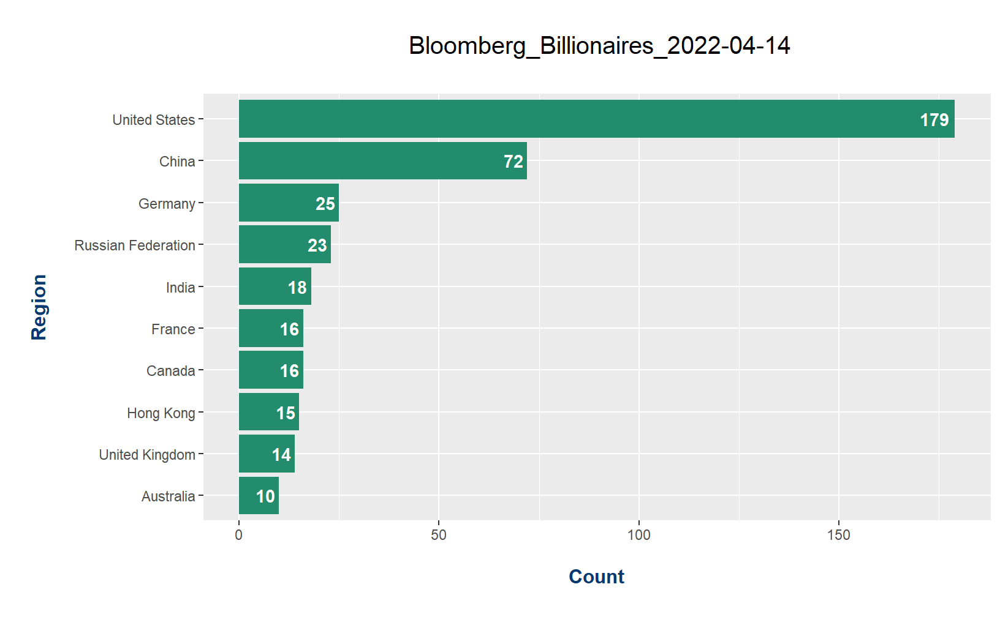
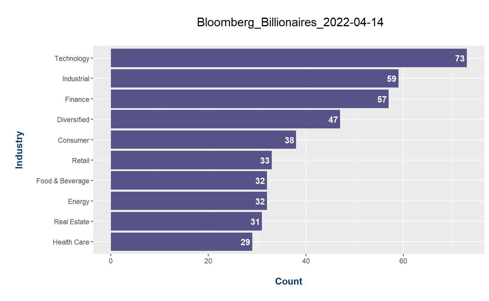

In this R webscraping project, I use RSelenium to extract the latest list of Billionaires net worth according to Bloomberg. Note that the Bloomberg Billionaires index does update every week.
With the loaded libraries I use RSelenium, rvest, tidyverse, tidyr along with stringi for working with text and ggplot2 for the data analysis portion. One main resource I used for learning some aspects of RSelenium is here.
## Bloomberg Billionaires Index Webscraping With RSelenium
# Made on Feb 28, 2022, updated on Apr 14, 2022
# Load libraries:
library(RSelenium)
library(rvest)
library(tidyverse)
library(stringi)
library(tidyr)
library(ggplot2)
This next code chunk tells R to open a new window of Firefox web browser. Then it goes to the Bloomberg Billionaires Index website and the reads in the page.
# Restart R (CTRL + SHIFT + F10) before running code below again if code does not work.
# Open Firefox browser:
rD <- rsDriver(browser = "firefox", port = 4545L, verbose = F)
remDr <- rD$client
# Bloomberg Billionaires Page, it updates each day.
url <- "https://www.bloomberg.com/billionaires/"
remDr$navigate(url)
# No need to click to accept cookies actually.
# Scroll down after more ranks appear (About 2 down arrows for each rank)
webElem <- remDr$findElement("css", "body")
Sys.sleep(3)
## Extract Billionaires Data:
# Format: Rank, Billionaire, Last Change in $, YTD $ Change, Country/Region, Industry
# Get html:
html <- remDr$getPageSource()[[1]]
page <- read_html(html)
The webpage HTML has been extracted into R. We can obtain parts of the table. I use xpaths with html_nodes().
Rank
### Get Rank
rank <- page %>%
html_nodes(xpath = '/html/body/div[6]/section[2]/div/div/div[1]') %>%
html_text2()
rank[1:105]## [1] "Rank" "1" "2" "3" "4" "5" "6" "7" "8" "9"
## [11] "10" "11" "12" "13" "14" "15" "16" "17" "18" "19"
## [21] "20" "21" "22" "23" "24" "25" "26" "27" "28" "29"
## [31] "30" "31" "32" "33" "34" "35" "36" "37" "38" "39"
## [41] "40" "41" "42" "43" "44" "45" "46" "47" "48" "49"
## [51] "50" "" "51" "52" "53" "54" "55" "56" "57" "58"
## [61] "59" "60" "61" "62" "63" "64" "65" "66" "67" "68"
## [71] "69" "70" "71" "72" "73" "74" "75" "76" "77" "78"
## [81] "79" "80" "81" "82" "83" "84" "85" "86" "87" "88"
## [91] "89" "90" "91" "92" "93" "94" "95" "96" "97" "98"
## [101] "99" "100" "" "101" "102"The rank output is close to ideal. The Rank text in index one needs to be removed and there are empty strings to be removed. In the next code chunk I remove the first index element and remove empty strings. The texts are converted into numeric numbers with as.numeric(). Empty strings are removed with billionaires names, total net worth and the other columns.
# Remove Rank (index 1) and blanks (stringi pkg):
rank <- rank[seq(2, length(rank))]
rank <- as.numeric(stri_remove_empty(rank))
Billionaire Names
### Billionaires Name
billionaires <- page %>%
html_nodes(xpath = '/html/body/div[6]/section[2]/div/div/div[2]') %>%
html_text2()
billionaires <- billionaires[seq(2, length(billionaires))] %>% stri_remove_empty()
Total Net Worth
### Total Net Worth:
total_net_worth <- page %>%
html_nodes(xpath = '/html/body/div[6]/section[2]/div/div/div[3]') %>%
html_text2() %>%
stri_remove_empty()
total_net_worth <- total_net_worth[seq(2, length(total_net_worth))] %>% stri_remove_empty()
Last Change In $
### Last Change in $
last_change <- page %>%
html_nodes(xpath = '/html/body/div[6]/section[2]/div/div/div[4]') %>%
html_text2() %>%
stri_remove_empty()
last_change <- last_change[seq(2, length(last_change))] %>% stri_remove_empty()
Year to Date Change In $
### YTD Change $
ytd_change <- page %>%
html_nodes(xpath = '/html/body/div[6]/section[2]/div/div/div[5]') %>%
html_text2() %>%
stri_remove_empty()
ytd_change <- ytd_change[seq(2, length(ytd_change))] %>% stri_remove_empty()
Country/Region
### Country/Region
region <- page %>%
html_nodes(xpath = '/html/body/div[6]/section[2]/div/div/div[6]') %>%
html_text2()
region <- region[seq(2, length(region))] %>% stri_remove_empty()
Industry
### Industry
industry <- page %>%
html_nodes(xpath = '/html/body/div[6]/section[2]/div/div/div[7]') %>%
html_text2()
industry <- industry[seq(2, length(industry))] %>% stri_remove_empty()
# Create dataframe:
bloomberg_billionaires_df <- data.frame(
Rank = rank,
Name = billionaires,
Total_Net_Worth = total_net_worth,
Last_Change = last_change,
YTD_Change = ytd_change,
Region = region,
Industry = industry
)
# Preview dataframe:
head(bloomberg_billionaires_df, 10)## Rank Name Total_Net_Worth Last_Change YTD_Change Region
## 1 1 Elon Musk $259B +$8.38B -$11.0B United States
## 2 2 Jeff Bezos $180B +$4.85B -$12.2B United States
## 3 3 Bernard Arnault $142B +$1.53B -$36.0B France
## 4 4 Bill Gates $130B +$1.37B -$8.13B United States
## 5 5 Warren Buffett $125B -$1.23B +$16.4B United States
## 6 6 Gautam Adani $118B +$805M +$41.9B India
## 7 7 Larry Page $116B +$1.70B -$12.1B United States
## 8 8 Sergey Brin $111B +$1.60B -$12.0B United States
## 9 9 Steve Ballmer $101B +$1.85B -$4.77B United States
## 10 10 Larry Ellison $100B +$1.08B -$6.71B United States
## Industry
## 1 Technology
## 2 Technology
## 3 Consumer
## 4 Technology
## 5 Diversified
## 6 Industrial
## 7 Technology
## 8 Technology
## 9 Technology
## 10 Technologytail(bloomberg_billionaires_df, 10)## Rank Name Total_Net_Worth Last_Change YTD_Change
## 491 491 Margot Perot & family $5.33B +$50.0M -$50.0M
## 492 492 Horst Pudwill $5.32B +$40.1M -$2.06B
## 493 493 Charles Johnson $5.31B +$65.9M -$729M
## 494 494 Mary Malone $5.29B +$30.3M +$100M
## 495 495 Mat Ishbia $5.28B +$113M -$1.99B
## 496 496 Zhang Lei $5.27B +$36.4M -$1.18B
## 497 497 Mark Scheinberg $5.25B +$50.0M -$75.0M
## 498 498 Zhao Yan $5.24B -$126M -$2.41B
## 499 499 Stephane Bancel $5.23B +$308M -$2.56B
## 500 500 Autry Stephens $5.22B $0 +$724M
## Region Industry
## 491 United States Diversified
## 492 Germany Consumer
## 493 United States Finance
## 494 United States Food & Beverage
## 495 United States Finance
## 496 China Finance
## 497 Isle of Man Entertainment
## 498 China Health Care
## 499 France Health Care
## 500 United States Energy
Sys.Date()## [1] "2022-04-14"
# String for file name:
paste0("Bloomberg_Billionaires_", Sys.Date(), '.csv')## [1] "Bloomberg_Billionaires_2022-04-14.csv"
You can use the following line to save the dataframe into a .csv file.
# Optional - Save Dataframe:
write.csv(bloomberg_billionaires_df, paste0("Bloomberg_Billionaires_", Sys.Date(), '.csv'), row.names = FALSE)
In this data analysis, I uncover insights from Bloomberg billionaires.
### Data Analysis Portion:
## Billionaires Count by Region:
by_region <- bloomberg_billionaires_df %>%
group_by(Region) %>%
summarise(Count = n()) %>%
arrange(desc(Count)) %>%
data.frame()
Apologies for the small plot output, I was trying to find ways to fix the size in RMarkdown. Solutions are hard to find.
## Create bar graph in ggplot2, Billionaires Count by Region:
# Sorting by counts for the Region
by_region$Region <- factor(by_region$Region,
levels = by_region$Region[order(by_region$Count)])
# Billionaires Count by Region (Top 10 Regions):
ggplot(head(by_region, 10), aes(x = Region, y = Count)) +
geom_bar(stat = "identity", fill = "#238c6d") +
coord_flip() +
geom_text(aes(label = Count), hjust = 1.2, colour = "white", fontface = "bold") +
labs(x = "\n Region \n", y = "\n Count \n",
title = paste0("\n Bloomberg_Billionaires_", Sys.Date(), "\n")) +
theme(plot.title = element_text(hjust = 0.5, size = 15),
axis.title.x = element_text(face="bold", colour="#063970", size = 12),
axis.title.y = element_text(face="bold", colour="#063970", size = 12))
Canadian Billionaires
## Canadian Billionaires (CZ from Binance highest for Canada):
bloomberg_billionaires_df %>% filter(Region == 'Canada')## Rank Name Total_Net_Worth Last_Change YTD_Change Region
## 1 36 Changpeng Zhao $33.6B +$676M -$62.2B Canada
## 2 137 Sherry Brydson $13.9B +$327M -$648M Canada
## 3 259 Taylor Thomson $8.57B +$184M -$420M Canada
## 4 260 Peter Thomson $8.57B +$184M -$420M Canada
## 5 261 David Thomson $8.57B +$181M -$419M Canada
## 6 265 James Pattison $8.47B +$114M -$200M Canada
## 7 339 Anthony von Mandl $7.18B +$34.0M -$770M Canada
## 8 371 Linda Campbell $6.73B +$129M -$334M Canada
## 9 372 Gaye Farncombe $6.73B +$129M -$334M Canada
## 10 381 J K Irving $6.58B +$16.5M -$197M Canada
## 11 382 Chip Wilson $6.57B +$211M -$46.1M Canada
## 12 391 Joseph Tsai $6.41B +$11.5M -$672M Canada
## 13 392 Arthur Irving $6.40B +$154M +$1.45B Canada
## 14 425 David Cheriton $5.99B +$117M -$259M Canada
## 15 434 Alain Bouchard $5.93B +$63.5M +$435M Canada
## 16 476 Tobi Lutke $5.47B +$113M -$6.27B Canada
## Industry
## 1 Finance
## 2 Media & Telecom
## 3 Media & Telecom
## 4 Media & Telecom
## 5 Media & Telecom
## 6 Media & Telecom
## 7 Consumer
## 8 Media & Telecom
## 9 Media & Telecom
## 10 Commodities
## 11 Retail
## 12 Technology
## 13 Energy
## 14 Technology
## 15 Retail
## 16 Technology
American Billionaires
## American Billionaires (Top 10):
bloomberg_billionaires_df %>%
filter(Region == 'United States') %>%
head(10)## Rank Name Total_Net_Worth Last_Change YTD_Change Region
## 1 1 Elon Musk $259B +$8.38B -$11.0B United States
## 2 2 Jeff Bezos $180B +$4.85B -$12.2B United States
## 3 4 Bill Gates $130B +$1.37B -$8.13B United States
## 4 5 Warren Buffett $125B -$1.23B +$16.4B United States
## 5 7 Larry Page $116B +$1.70B -$12.1B United States
## 6 8 Sergey Brin $111B +$1.60B -$12.0B United States
## 7 9 Steve Ballmer $101B +$1.85B -$4.77B United States
## 8 10 Larry Ellison $100B +$1.08B -$6.71B United States
## 9 13 Mark Zuckerberg $79.0B +$298M -$46.5B United States
## 10 16 Jim Walton $70.0B +$1.59B +$5.51B United States
## Industry
## 1 Technology
## 2 Technology
## 3 Technology
## 4 Diversified
## 5 Technology
## 6 Technology
## 7 Technology
## 8 Technology
## 9 Technology
## 10 Retail
Billionaires By Category
## Billionaires Count by Category
by_category <- bloomberg_billionaires_df %>%
group_by(Industry) %>%
summarise(Count = n()) %>%
arrange(desc(Count)) %>%
data.frame()
head(by_category, 10)## Industry Count
## 1 Technology 73
## 2 Industrial 59
## 3 Finance 57
## 4 Diversified 47
## 5 Consumer 38
## 6 Retail 33
## 7 Energy 32
## 8 Food & Beverage 32
## 9 Real Estate 31
## 10 Health Care 29
## Bar Graph Of Billionaires By Category:
# Sorting by counts for the Category
by_category$Industry <- factor(by_category$Industry,
levels = by_category$Industry[order(by_category$Count)])
# Top 10 Billionaires Count by Industry, labels added, blue bars
ggplot(head(by_category, 10), aes(x = Industry, y = Count)) +
geom_bar(stat = "identity", fill = "#555387") +
coord_flip() +
geom_text(aes(label = Count), hjust = 1.2, colour = "white", fontface = "bold") +
labs(x = "\n Industry \n", y = "\n Count \n",
title = paste0("\n Bloomberg_Billionaires_", Sys.Date(), "\n")) +
theme(plot.title = element_text(hjust = 0.5, size = 15),
axis.title.x = element_text(face="bold", colour="#063970", size = 12),
axis.title.y = element_text(face="bold", colour="#063970", size = 12))
Technology Billionaires
## Technology Billionaires (Top 10):
bloomberg_billionaires_df %>% filter(Industry == 'Technology') %>% head(10)## Rank Name Total_Net_Worth Last_Change YTD_Change Region
## 1 1 Elon Musk $259B +$8.38B -$11.0B United States
## 2 2 Jeff Bezos $180B +$4.85B -$12.2B United States
## 3 4 Bill Gates $130B +$1.37B -$8.13B United States
## 4 7 Larry Page $116B +$1.70B -$12.1B United States
## 5 8 Sergey Brin $111B +$1.60B -$12.0B United States
## 6 9 Steve Ballmer $101B +$1.85B -$4.77B United States
## 7 10 Larry Ellison $100B +$1.08B -$6.71B United States
## 8 13 Mark Zuckerberg $79.0B +$298M -$46.5B United States
## 9 23 Michael Dell $51.0B +$579M -$3.96B United States
## 10 25 MacKenzie Scott $48.5B +$1.65B -$7.78B United States
## Industry
## 1 Technology
## 2 Technology
## 3 Technology
## 4 Technology
## 5 Technology
## 6 Technology
## 7 Technology
## 8 Technology
## 9 Technology
## 10 Technology
Finance Billionaires
## Finance Billionaires (Top 10):
bloomberg_billionaires_df %>% filter(Industry == 'Finance') %>% head(10)## Rank Name Total_Net_Worth Last_Change YTD_Change Region
## 1 34 Stephen Schwarzman $34.9B +$788M -$2.94B United States
## 2 36 Changpeng Zhao $33.6B +$676M -$62.2B Canada
## 3 42 Ken Griffin $30.5B +$84.8M +$9.19B United States
## 4 49 James Simons $26.0B +$175M +$525M United States
## 5 65 Abigail Johnson $22.1B +$42.3M -$3.90B United States
## 6 72 Thomas Peterffy $20.7B +$214M -$4.11B United States
## 7 75 Sam Bankman-Fried $20.5B +$805M +$4.28B United States
## 8 112 Vicky Safra $16.3B $0 +$150M Greece
## 9 114 David Tepper $16.2B +$50.0M +$1.32B United States
## 10 116 Ray Dalio $16.1B $0 +$510M United States
## Industry
## 1 Finance
## 2 Finance
## 3 Finance
## 4 Finance
## 5 Finance
## 6 Finance
## 7 Finance
## 8 Finance
## 9 Finance
## 10 Finance
Retail Billionaires
## Retail Billonaires (Top 10):
bloomberg_billionaires_df %>% filter(Industry == 'Retail') %>% head(10)## Rank Name Total_Net_Worth Last_Change YTD_Change Region
## 1 16 Jim Walton $70.0B +$1.59B +$5.51B United States
## 2 17 Rob Walton $69.2B +$1.56B +$5.12B United States
## 3 18 Alice Walton $67.6B +$1.54B +$5.00B United States
## 4 26 Amancio Ortega $47.4B +$433M -$20.1B Spain
## 5 47 Dieter Schwarz $27.1B +$272M -$1.85B Germany
## 6 55 Tadashi Yanai $24.6B +$589M -$5.01B Japan
## 7 59 Lukas Walton $23.8B +$537M +$1.66B United States
## 8 64 Henry Cheng $22.2B +$49.3M -$770M Hong Kong
## 9 69 Radhakishan Damani $21.4B +$25.3M -$3.22B India
## 10 90 John Menard $18.6B +$237M -$7.09B United States
## Industry
## 1 Retail
## 2 Retail
## 3 Retail
## 4 Retail
## 5 Retail
## 6 Retail
## 7 Retail
## 8 Retail
## 9 Retail
## 10 Retail